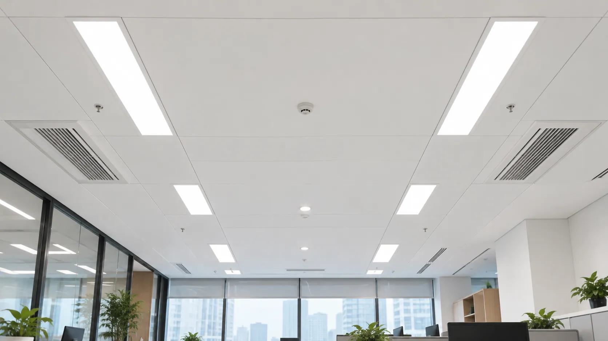
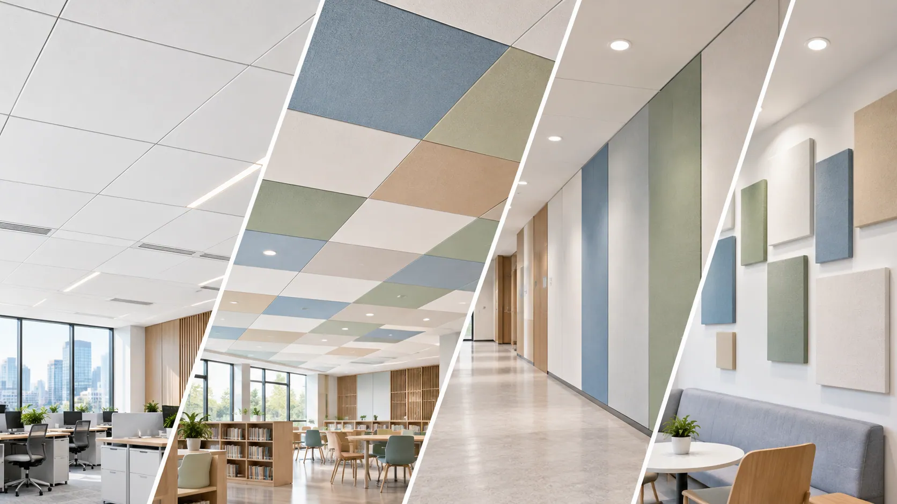
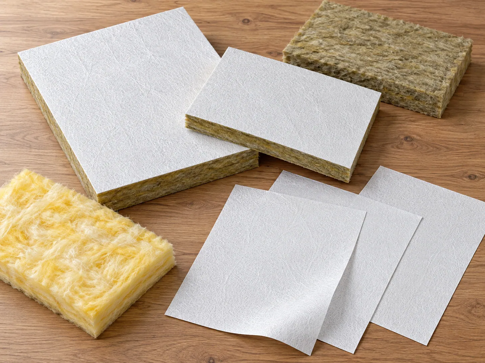
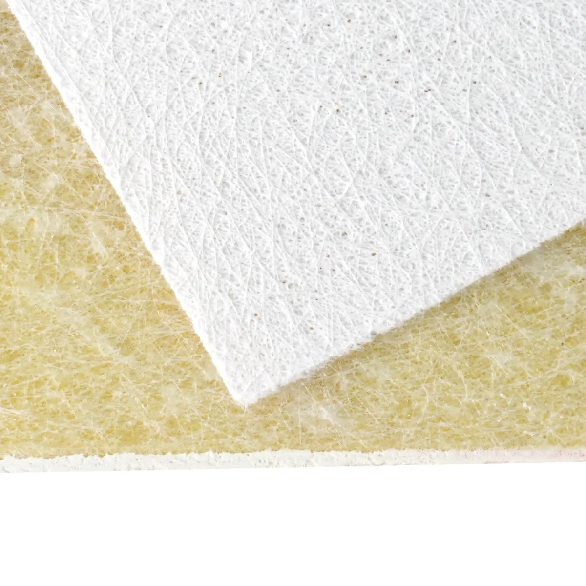

Offices & Commercial Interiors
Uniform white finishes, consistent surface textures, and application-matched acoustic performance for modern working environments.
01. Hero Section
Acoustic Ceiling Facers Solution Hub
Improve acoustic performance, surface consistency, bonding reliability, and production efficiency with application-matched fiberglass coated veil solutions.
GRECHO helps acoustic ceiling manufacturers overcome facer-related challenges, from air permeability and uneven surface finishes to lamination defects and demanding cleaning requirements.
Key Advantages:

02. Application Context
Acoustic ceiling panels require more than an attractive surface. The facing material plays an important role in airflow control, visual consistency, durability, and compatibility with the acoustic core.
GRECHO provides fiberglass coated veil solutions tailored to different acoustic ceiling applications, helping manufacturers balance acoustic requirements with production efficiency and interior design expectations.

Uniform white finishes, consistent surface textures, and application-matched acoustic performance for modern working environments.
Controlled air permeability and acoustic performance for spaces requiring speech clarity and balanced sound distribution.
Durable acoustic ceiling facers with consistent appearance and suitable surface properties for schools, libraries, and public facilities.
Cleanable fiberglass coated veil options for ceiling systems requiring frequent wiping, surface durability, and compatibility with specified cleaning procedures.

03. Pain Point Diagnostic
Even when the acoustic core meets the required specifications, unsuitable facer properties can affect sound performance, finished panel appearance, production efficiency, and long-term durability.
Excessively dense coatings may restrict airflow through the facer, reducing sound transmission into the absorptive core.
Conversely, excessively high permeability may not provide the desired surface reflection characteristics for applications requiring greater sound distribution.
Inconsistent coating thickness, uneven pigment distribution, or irregular surface textures can cause visible color differences, patchy finishes, and inconsistent light reflection between acoustic ceiling panels.
Incompatible coating structures, unsuitable adhesive penetration, or inconsistent lamination conditions may lead to weak facer-to-core bonding, blistering, wrinkling, and surface separation.
Acoustic ceiling facers exposed to frequent cleaning, humidity, or public-space conditions may experience staining, surface damage, or coating deterioration if the material is not designed for the intended environment.
04. Facer Direction
GRECHO offers application-matched fiberglass coated veil directions designed to address acoustic performance, surface appearance, bonding reliability, and cleaning requirements.
Each facer direction can be reviewed according to the acoustic core, coating structure, production method, and finished ceiling panel specifications.

Challenge: Unbalanced Sound Absorption & Reflection
Acoustic ceiling panels require suitable airflow characteristics to achieve their intended sound performance.
Excessively low permeability can restrict sound transmission into the absorptive core, while higher permeability may not suit systems designed for greater sound reflection and distribution.
GRECHO Solution
GRECHO offers fiberglass coated veil solutions with application-matched air permeability to support different acoustic ceiling designs.
High-permeability facers allow sound waves to pass more readily into the acoustic core, supporting sound absorption.
Lower-permeability facers can be evaluated for ceiling systems requiring a different balance between sound absorption and reflection.
Review Focus: Air permeability, coating density, acoustic core structure, sound absorption requirements, and finished panel acoustic testing.
Challenge: Color Variation, Uneven Texture & Inconsistent Appearance
Inconsistent coating distribution, insufficient surface coverage, or irregular textures can create visible differences between ceiling panels.
These defects become particularly noticeable in large ceiling installations where lighting highlights variations in color, texture, and surface reflection.
GRECHO Solution
A controlled fiberglass coating process helps improve pigment distribution, surface coverage, and texture consistency.
GRECHO provides application-matched surface finishes, including smooth-coated, dotted, and fine-textured options, to help manufacturers achieve a more uniform ceiling appearance.
High-hiding formulations can also be reviewed when the acoustic core requires additional visual coverage.
Review Focus: Color consistency, coating uniformity, hiding power, surface texture, light reflection, and batch-to-batch stability.
Challenge: Facer Delamination, Surface Damage & Cleaning Limitations
Insufficient bonding compatibility or unsuitable surface coatings may result in delamination, wrinkles, or coating damage during manufacturing and subsequent use.
For ceiling panels installed in healthcare, education, and other public environments, inadequate cleanability can further reduce long-term surface quality.
GRECHO Solution
GRECHO helps manufacturers review fiberglass veil structures and coating formulations for bonding compatibility, dimensional stability, and application-specific surface durability.
Selected coating systems can also be evaluated for water resistance, wiping durability, and resistance to specified cleaning agents.
Review Focus: Adhesive compatibility, lamination strength, dimensional stability, surface abrasion, cleaning resistance, and moisture exposure.
05. Material Direction Review
Different acoustic ceiling systems require different combinations of air permeability, surface coverage, appearance, and durability.
GRECHO helps manufacturers evaluate suitable fiberglass coated veil directions according to acoustic requirements, visual expectations, and production conditions.

For sound-absorbing ceiling panels requiring airflow through the facing material to support acoustic core performance.
For selected acoustic ceiling systems requiring a different balance of sound reflection and absorption, particularly in large conference rooms and spacious interiors.
For ceiling panels requiring consistent white appearance, improved core coverage, and uniform surface finishes.
For acoustic ceiling applications requiring improved surface cleanability, wiping resistance, and durability under specified maintenance conditions.
06. Performance Review Factors
GRECHO helps production engineers, technical buyers, R&D teams, and quality managers assess facer properties that influence acoustic ceiling performance, manufacturing reliability, and finished panel quality.
Evaluate facer permeability and coating structure to support the desired balance of sound absorption and reflection within the complete acoustic ceiling system.
Review coating uniformity, hiding power, surface texture, color stability, and light reflection to achieve a consistent ceiling appearance.
Assess facer surface characteristics, adhesive compatibility, bonding strength, and lamination conditions to support reliable facer-to-core adhesion.
Review available fire-related documentation for the selected fiberglass coated veil and applicable fire classification requirements of the complete acoustic ceiling panel.
Evaluate water resistance, wiping performance, abrasion resistance, and compatibility with specified cleaning agents according to the intended installation environment.
Confirm roll dimensions, tensile properties, dimensional stability, coating consistency, and compatibility with continuous acoustic ceiling manufacturing processes.
07. Documentation Support
GRECHO coordinates technical documentation and material samples to help acoustic ceiling manufacturers evaluate suitable fiberglass coated veil solutions before production qualification.
Document access is matched to the selected product, application requirements, and buyer review stage.

Public Resource · PRODUCT BRIEF
An introduction to fiberglass coated veil solutions for acoustic ceiling manufacturing, including common surface finishes, permeability directions, and application considerations.
Application: Acoustic Ceiling Tiles / Suspended Ceiling Systems
Form Submission · BASIC TDS
Basic material specifications including nominal weight, thickness, roll width, surface finish, color options, and available physical properties.
Access: Form Submission
Review Required · FIRE TEST
Available fire-related documentation for selected fiberglass coated veil configurations under applicable testing standards.
Review: Product and Configuration Dependent
Review Required · FULL TDS
Detailed technical specifications covering selected facer properties, including air permeability, tensile strength, coating characteristics, water resistance, and relevant test conditions.
Scope: Selected Acoustic Fiberglass Coated Veil
Review Required · SDS / MSDS
Available material safety and handling information for the selected fiberglass coated veil product.
Type: Safety Documentation
Internal Review · COMPLIANCE
Review of available compliance documentation based on the selected facer, intended market, and acoustic ceiling application.
Access: Internal Technical Review
Access Clarification
Document availability depends on the selected material, coating configuration, application, and testing scope.
Fire classifications, air permeability values, and other material properties should not be treated as direct certification of the complete acoustic ceiling system. Finished panel acoustic and fire performance must be verified through applicable system testing.
Unbalanced acoustic performance, visible surface defects, weak bonding, or insufficient cleaning durability can affect both manufacturing efficiency and finished ceiling quality.
GRECHO helps acoustic ceiling manufacturers review these challenges and identify suitable fiberglass coated veil directions based on their production requirements.
Share your acoustic core type, manufacturing process, target surface finish, and key technical concerns to begin a focused material evaluation.
09. FAQ Preview
Air permeability influences how sound waves interact with the facer and the underlying acoustic core.
Higher-permeability facers generally allow sound to enter the absorptive core more easily, supporting sound absorption.
Lower-permeability facers may change the balance between sound transmission and reflection, depending on the complete ceiling construction.
The final acoustic performance should be evaluated through testing of the finished ceiling panel.
Controlled coating formulations and consistent processing can help improve surface coverage, pigment distribution, and texture uniformity.
High-hiding white facers can be evaluated when the acoustic core needs additional visual coverage.
Manufacturers should also review color tolerances, coating uniformity, and batch consistency to reduce visible differences in large ceiling installations.
Yes. Suitable fiberglass veil structures and coating formulations can support bonding compatibility with the acoustic core and help maintain surface stability.
Selected coating systems can also be designed for improved water resistance, wiping durability, and compatibility with specified cleaning procedures.
Actual bonding and cleaning performance should be verified using the intended core, adhesive, and maintenance conditions.
Please share your acoustic core material, panel dimensions, manufacturing process, required surface finish, and target acoustic performance.
Information about current problems, such as poor sound absorption, color variation, delamination, or cleaning-related surface damage, will help GRECHO recommend a more suitable facer direction.
10. Final CTA
From air permeability and acoustic compatibility to uniform surface finishes, reliable bonding, and cleaning durability, GRECHO helps acoustic ceiling manufacturers identify fiberglass coated veil solutions matched to their production needs.
Whether you are developing a new acoustic ceiling product or improving an existing manufacturing process, our team can assist with material direction review, technical documentation, and sample coordination.